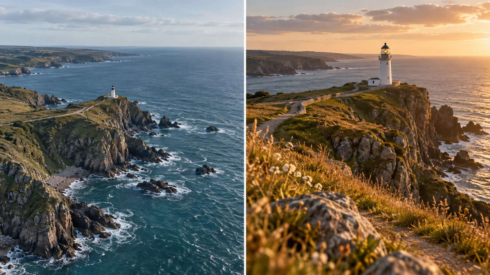

F31 · 중급 · FPV
영화적 화면 토론
같은 장소의 높은 전경과 낮은 사선 시점을 비교해 각 화면이 전달하는 정보를 구분한다.
그림에서 확인할 세 가지영화적이라는 말을 화면 선택으로 바꾼다
1높고 넓은 해안
첫 화면에서 작은 등대와 해안의 관계를 본다. 대상의 크기는 작지만 주변 지형과 위치를 넓게 이해하는 정보가 남는다.
2낮은 전경과 등대
두 번째 화면의 풀과 등대 사이 거리를 살핀다. 가까운 전경이 깊이를 만들고 대상에 시선을 모으는지, 무엇을 가리는지 함께 본다.
3구도와 빛의 차이
두 화면의 밝기와 색, 등대 크기, 수평선 위치를 각각 비교한다. 여러 변수가 함께 바뀌었으므로 한 요소만 원인으로 지목하지 않는다.
촬영 설계
촬영을 이렇게 설계한다
화면이 설명할 것을 정한다
학습 장면에서는 해안 전체의 위치 관계를 알려줄지 등대에 주의를 모을지 먼저 정한다. 같은 장소라도 설명할 정보가 다르면 높은 전경과 낮은 사선 시점의 가치가 달라진다.
전경의 역할을 확인한다
낮은 시점에 풀이나 바위를 넣을 때 장식으로만 생각하지 않는다. 가까운 대상과 먼 등대의 간격이 깊이를 만드는지, 오히려 중요한 부분을 가리는지 비교해 전경을 남길지 결정한다.
빛과 구도를 분리해 비교한다
따뜻한 빛 때문에 더 좋아 보이는 것인지 등대의 크기와 위치 때문에 집중되는 것인지 나누어 본다. 학습안에서는 한 번에 변한 요소를 목록으로 적어 특정 기법 하나의 효과로 단정하지 않는다.
Tom Strojnik의 공식 소개는 FPV 영상의 영화적 표현을 다루지만 세부 시연은 확인되지 않았다.
원본 영상Make Your Drone Videos Look Filmic
1. 대상이 읽히는 크기
주요 대상이 화면에서 얼마나 크게 보이며 주변과 어떻게 구별되는지 본다. 크기를 늘리는 것이 어떤 정보를 줄이는지도 함께 확인한다.
2. 전경의 기능
가까운 물체가 깊이와 방향을 만드는지 단순히 시야를 가리는지 살핀다. 전경이 있다는 사실보다 대상과의 관계가 중요하다.
3. 영화적이라는 평가
좋아 보인다고 느끼는 순간의 빛·크기·배경·움직임을 구체적으로 나눈다. 한 가지 필터나 비행 높이로 모든 차이를 설명하지 않는다.
재생이 제한되면 원본 영상 새 창을 이용하세요.
공식 소개 · 한국어 요약
영상 소개만으로 구체적인 장면을 단정하지 않는다
공식 소개
메타데이터 요약: Tom Strojnik의 공식 영상 소개는 FPV 영상을 더 영화적으로 만드는 주제를 안내한다.
확인 한계
이번 검토에서는 상세 자막이나 시연을 확보하지 못했다.
따라서 영상이 특정 등대 장면이나 특정 촬영 원칙을 보여준다고 단정하지 않는다.
학습안 범위
교안의 높은 전경과 낮은 사선 시점은 영화적이라는 평가를 구체적인 화면 요소로 나누는 독립된 비교 예시다.
Kling 프롬프트단문 인과 체인 · 16:9
내가 직접 만들어 본다
같은 등대를 높은 전경에서 낮은 사선으로 옮기며 빛은 고정하고 높이와 전경이 만드는 정보 차이만 보이게 지시한다.
- S01해안 절벽 위에 작은 등대가 서 있다.
- S02영상은 하나의 연속 쇼트다.
- S03화면에 드론 기체는 나오지 않는다.
- S04처음 10초 동안 카메라는 높은 곳에서 해안 전체를 내려다본다.
- S05등대가 작게 보이기 때문에 해안선과 절벽의 위치 관계가 읽힌다.
- S06다음 10초 동안 카메라는 등대를 바라보며 천천히 낮아진다.
- S07카메라가 낮아지기 때문에 등대가 화면에서 점점 커진다.
- S08낮아진 카메라 앞으로 풀과 바위가 지나간다.
- S09가까운 풀과 바위 때문에 등대까지의 거리가 깊게 느껴진다.
- S10마지막 10초 동안 카메라는 낮은 사선 위치에 머문다.
- S11해안 전체는 좁아지고 등대로 시선이 모인다.
- S12하늘의 빛과 색은 처음부터 끝까지 그대로다.
- S13그래서 달라진 느낌은 높이와 전경 때문이다.
[네거티브]
- 등대가 크고 화려한 건물로 바뀌는 것 금지
- 장면이 여러 컷으로 나뉘어 끊기는 것 금지
- 화면에 드론 기체가 나타나는 것 금지
- 처음부터 해안 없이 바다만 보이는 것 금지
- 등대가 처음부터 화면 가득 크게 나오는 것 금지
- 카메라가 낮아지는 대신 위로 올라가는 것 금지
- 등대 크기가 그대로 멈춰 보이는 것 금지
- 풀과 바위가 등대를 완전히 가리는 것 금지
- 전경이 너무 가까워 화면이 어수선해지는 것 금지
- 카메라가 낮아지다가 다시 높이 올라가는 것 금지
- 해안 전체가 그대로 넓게 남아 있는 것 금지
- 노을 같은 따뜻한 빛으로 색이 변하는 것 금지
- 높이와 함께 색감이 달라져 원인이 섞이는 것 금지
- S01영상은 FPV 시점의 하나의 연속 쇼트다.
- S02화면에 드론 기체는 나오지 않는다.
- S03해안 절벽 위에 작은 등대가 서 있다.
- S04처음 10초 동안 카메라는 높은 하늘에서 해안으로 급강하한다.
- S05등대가 작게 보여 해안선과 절벽의 위치가 읽힌다.
- S06카메라는 점점 속도를 높이며 절벽 가장자리를 스친다.
- S07다음 10초 동안 카메라는 풀밭 위를 낮게 질주한다.
- S08가까운 풀과 바위가 옆으로 빠르게 흘러간다.
- S09카메라는 두 바위 사이의 틈을 통과한다.
- S10풀과 바위 때문에 등대까지의 거리가 깊게 느껴진다.
- S11카메라가 한가운데서 빙글 한 바퀴 돈다.
- S12도는 동안 바다와 절벽과 하늘이 차례로 스쳐 지나간다.
- S13마지막 10초 동안 카메라는 낮은 사선에서 급감속한다.
- S14해안 전체는 좁아지고 등대로 시선이 모인다.
- S15하늘의 빛과 색은 처음부터 끝까지 그대로다.
- S16그래서 달라진 느낌은 높이와 전경 때문이다.
[네거티브]
- 컷이 나뉘어 여러 쇼트로 끊기는 것 금지
- 화면에 드론 기체가 나타나는 것 금지
- 등대가 크게 확대되어 시작하는 것 금지
- 카메라가 멀리서 내려다보기만 하는 것 금지
- 등대만 크게 남아 지형이 안 읽히는 것 금지
- 절벽과 멀어 속도가 안 느껴지는 것 금지
- 높은 곳에서 느리게 내려다보는 것 금지
- 풀과 바위가 보이지 않는 것 금지
- 바위를 피해 틈 없이 지나가는 것 금지
- 전경이 등대를 가려 버리는 것 금지
- 제자리에서 흔들릴 뿐 한 바퀴 돌지 않는 것 금지
- 도는 동안 풍경이 하나도 바뀌지 않는 것 금지
- 감속 없이 등대를 지나쳐 버리는 것 금지
- 해안이 그대로 넓어 시선이 흩어지는 것 금지
- 중간에 빛과 색이 크게 바뀌는 것 금지
- 빛 변화가 원인처럼 보이는 것 금지
결과에서 볼 것
- 높은 시점에서 해안과 등대의 위치 관계가 읽혔는가
- 낮아지며 전경이 등대까지의 깊이를 만들었는가
- 빛과 색이 그대로여서 높이 차이만 비교됐는가